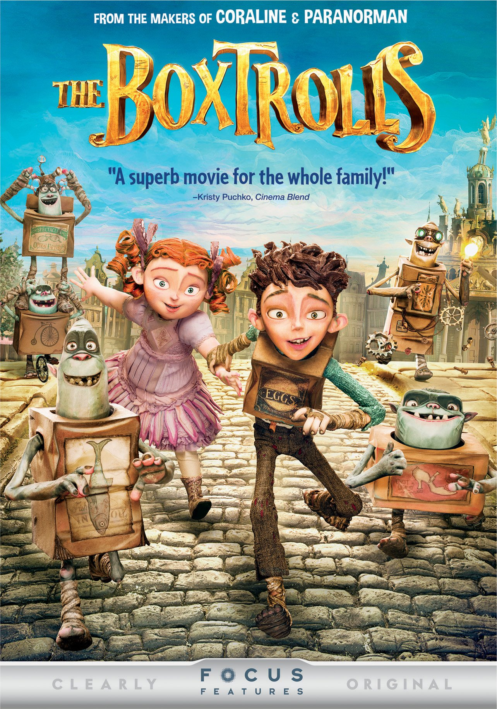
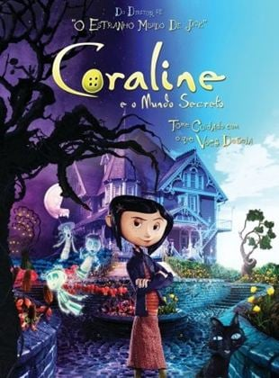
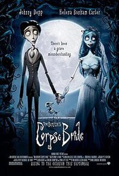

| Título do Filme |
Link |
Opinião |
Capa |
| Os BOXTROLLS |
Assistir |
"Os Boxtrolls" é um filme de animação em stop-motion produzido pela Laika. A história se passa na cidade fictícia de Cheesebridge, onde vivem os boxtrolls, criaturas simpáticas que usam caixas de papelão como roupas e moradias. Eles são mal compreendidos e temidos pelos habitantes da cidade,
que acreditam que os boxtrolls sequestram crianças e roubam objetos.. |
 |
| O ESTRANHO MUNDO DE JACK |
Assistir |
O Estranho Mundo de Jack" é um filme de animação dirigido por Henry Selick e produzido por Tim Burton. A história segue Jack Skellington, o Rei da Abóboras da Cidade do Halloween, que se cansa da rotina de assustar as pessoas. Um dia, ele descobre a Cidade do Natal e fica fascinado com a alegria e cores do Natal. Inspirado, Jack decide se apoderar do Natal e faz planos para sequestrar o Papai Noel e assumir seu lugar. No entanto, as coisas
não saem como planejado e Jack aprende lições importantes sobre identidade e propósito. |
 |
| CORALINE E O MUNDO SECRETO |
Assistir |
"Coraline e o Mundo Secreto" é um filme de animação baseado no livro de Neil Gaiman. A história segue Coraline Jones, uma garota curiosa e aventureira que se muda para uma casa antiga com seus pais. Sentindo-se negligenciada e entediada, Coraline descobre uma porta secreta em sua casa que a leva a um mundo paralelo. Esse mundo é uma versão idealizada do seu próprio, onde tudo parece perfeito e seus "outros" pais são mais atenciosos. No entanto, Coraline logo percebe que esse mundo esconde perigos sombrios e sinistros. Ela deve usar sua coragem e
inteligência para salvar a si mesma e sua família real. |
 |
| NOIVA CADAVER |
Assistir |
"A Noiva Cadáver" é um filme de animação em stop-motion dirigido por Tim Burton e Mike Johnson. A história se passa em uma pequena vila vitoriana e segue Victor Van Dort, um jovem nervoso que está prestes a se casar com Victoria Everglot. Acidentalmente, enquanto pratica seus votos de casamento na floresta, Victor coloca a aliança em um dedo de esqueleto, despertando Emily, a Noiva Cadáver. Emily, que foi assassinada e enterrada na floresta,
acredita que agora está casada com Victor e o leva para o submundo. |
 |